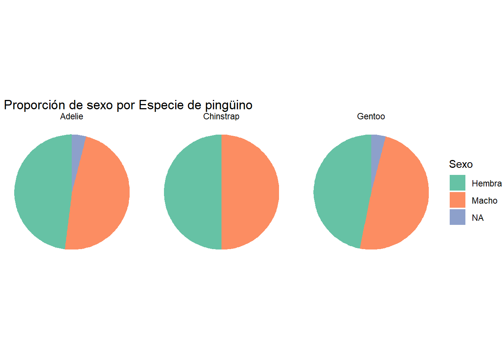
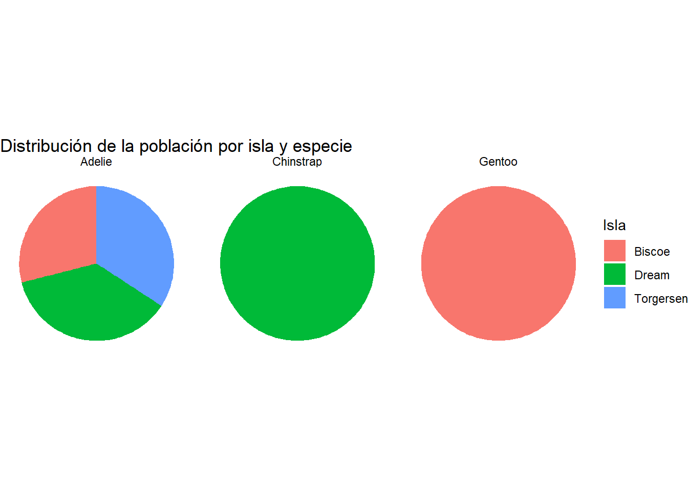

install.packages("palmerpenguins")
install.packages("ggplot2")
install.packages("stat_binhex")
install.packages("corrplot")
install.packages("tidyr")Entrega 1
Instalamos los paquetes que vamos a necesitar:
library(palmerpenguins)
library(ggplot2)
#library(stat_binhex)
library(corrplot)
library(tidyr)Exploración inicial y descripción de variables.
En primer lugar, visualizaremos el conjunto de datos.
library(palmerpenguins)
str(penguins)tibble [344 × 8] (S3: tbl_df/tbl/data.frame)
$ species : Factor w/ 3 levels "Adelie","Chinstrap",..: 1 1 1 1 1 1 1 1 1 1 ...
$ island : Factor w/ 3 levels "Biscoe","Dream",..: 3 3 3 3 3 3 3 3 3 3 ...
$ bill_length_mm : num [1:344] 39.1 39.5 40.3 NA 36.7 39.3 38.9 39.2 34.1 42 ...
$ bill_depth_mm : num [1:344] 18.7 17.4 18 NA 19.3 20.6 17.8 19.6 18.1 20.2 ...
$ flipper_length_mm: int [1:344] 181 186 195 NA 193 190 181 195 193 190 ...
$ body_mass_g : int [1:344] 3750 3800 3250 NA 3450 3650 3625 4675 3475 4250 ...
$ sex : Factor w/ 2 levels "female","male": 2 1 1 NA 1 2 1 2 NA NA ...
$ year : int [1:344] 2007 2007 2007 2007 2007 2007 2007 2007 2007 2007 ...nrows=nrow(penguins)Vemos que hay 344 observaciones de 8 variables:
Especie
Esta variable es cualitativa nominal politómica.
Hemos visto ya en la descripción del tibble que hay tres especies de pingüino. Para ver qué especies son y cuántos ejemplares hay de cada una, utilizamos el siguiente codigo.
x=table(penguins$species)
c(x,"NA's"=sum(is.na(penguins$species))) Adelie Chinstrap Gentoo NA's
152 68 124 0 Por tanto, de más a menos común, hay pingüinos de las especies Adelie, Gentoo y Chinstrap.
Isla
Esta variable es cualitativa nominal politómica.
x=table(penguins$island)
c(x,"NA's"=sum(is.na(penguins$islands))) Biscoe Dream Torgersen NA's
168 124 52 0 De más a menos cantidad, hay pingüinos en las islas Biscoe, Dream y Torgersen.
Longitud del pico
Es cuantitativa continua, está expresada en milímetros y discretizada a las décimas (\(10^{-4}\) metros).
Veamos los estadísticos estándares de esta variable:
Min. 1st Qu. Median Mean 3rd Qu. Max. NA's
32.10 39.23 44.45 43.92 48.50 59.60 2 El pico más corto mide 32.1 milímetros, y el más largo, 59.6. El primer cuartil de esta variable es 39.225, la mediana 44.45 y el tercero 48.5. La media es de 43.9219298 y la desviación típica muestral de NA. Además, hay 2 valores NA.
Profundidad del pico
Es cuantitativa continua, está expresada en milímetros y discretizada a las décimas (\(10^{-4}\) metros).
Min. 1st Qu. Median Mean 3rd Qu. Max. NA's
13.10 15.60 17.30 17.15 18.70 21.50 2 El pico más fino mide 13.1 milímetros, y el más grueso, 21.5. El primer cuartil de esta variable es 15.6, la mediana 17.3 y el tercero 18.7. La media es de 17.1511696 y la desviación típica muestral de NA. Además, hay 2 valores NA.
Longitud de la aleta
Es cuantitativa continua, está expresada en milímetros y discretizada a las unidades (\(10^{-3}\) metros).
Veamos los estadísticos estándares de esta variable:
Min. 1st Qu. Median Mean 3rd Qu. Max. NA's
172.0 190.0 197.0 200.9 213.0 231.0 2 La aleta más corta mide 172 milímetros, y la más larga, 231. El primer cuartil de esta variable es 190, la mediana 197 y el tercero 213. La media es de 200.9152047 y la desviación típica muestral de NA. Además, hay 2 valores NA.
Peso
Es cuantitativa continua, está expresada en gramos y discretizada a los múltiplos de 5 gramos. Para ver que, efectivamente, esa es la discretización, hemos utilizado el siguiente código:
pesos=na.omit(penguins$body_mass_g)
sum(pesos%%5)[1] 0Deducimos que no hay ningún dato que no sea múltiplo de 5 (si hubiese alguno, la suma sería \(>0\)).
Veamos los estadísticos estándares de esta variable:
Min. 1st Qu. Median Mean 3rd Qu. Max. NA's
2700 3550 4050 4202 4750 6300 2 El pingüino más liviano pesa 2700 gramos, y el más pesado, 6300. El primer cuartil de esta variable es 3550, la mediana 4050 y el tercero 4750. La media es de 4201.754386 y la desviación típica muestral de NA. Además, hay 2 valores NA.
Sexo
Esta variable es cualitativa nominal dicotómica.
x=table(penguins$sex)
c(x,"NA's"=sum(is.na(penguins$sex)))female male NA's
165 168 11 Año
Esta variable es ordinal, pero R asigna a esta variable el tipo int, pues sus valores son números enteros. En realidad se trata de un factor ordenado. Podemos arreglar esto con el siguiente código:
penguins$year=factor(penguins$year, ordered=TRUE)
penguins %>% strtibble [344 × 8] (S3: tbl_df/tbl/data.frame)
$ species : Factor w/ 3 levels "Adelie","Chinstrap",..: 1 1 1 1 1 1 1 1 1 1 ...
$ island : Factor w/ 3 levels "Biscoe","Dream",..: 3 3 3 3 3 3 3 3 3 3 ...
$ bill_length_mm : num [1:344] 39.1 39.5 40.3 NA 36.7 39.3 38.9 39.2 34.1 42 ...
$ bill_depth_mm : num [1:344] 18.7 17.4 18 NA 19.3 20.6 17.8 19.6 18.1 20.2 ...
$ flipper_length_mm: int [1:344] 181 186 195 NA 193 190 181 195 193 190 ...
$ body_mass_g : int [1:344] 3750 3800 3250 NA 3450 3650 3625 4675 3475 4250 ...
$ sex : Factor w/ 2 levels "female","male": 2 1 1 NA 1 2 1 2 NA NA ...
$ year : Ord.factor w/ 3 levels "2007"<"2008"<..: 1 1 1 1 1 1 1 1 1 1 ...Ahora sí tiene el tipo adecuado.
x=table(penguins$year)
c(x,"NA's"=sum(is.na(penguins$year)))2007 2008 2009 NA's
110 114 120 0 La unidad muestral de la tabla es un pingüino.
library(ggplot2)
species_colors = c("orange", "purple", "darkcyan")Cruces de variables cualitativas con cuantitativas
En primer lugar, consideramos que puede ser interesante comparar las distintas medidas de los pingüinos entre especies. Para esto, primero comparamos individualmente cada variable
Comparación de las variables cuantitativas según la especie una a una
Para realizar esta comparación, utilizaremos una gráfica de violín para cada una de las variables cualitativas.



En estos gráficos observamos un patrón común: Para cada medida, dos especies de pingüino suelen tener una distribución parecida, y la tercera es visiblemente distinta. Concretamente:
- Los pingüinos Adelie son, con diferencia, los que tienen el pico más corto.
- Los Gentoo tienen, notablemente, el pico más fino, la aleta más larga y el mayor peso.
Una vez visualizadas individualmente, puede ser interesante intentar, por un lado, cruzar las medidas entre ellas y, por el otro, relacionar esto con la especie.
Comparación de las variables cuantitativas entre ellas y por especie
Un gráfico de dispersión separado por colores nos permite cumplir ambos objetivos de esta sección al mismo tiempo.
Una vez visualizadas individualmente, puede ser interesante intentar, por un lado, cruzar las medidas entre ellas y, por el otro, relacionar esto con la especie. Un gráfico de dispersión separado por colores nos permite cumplir ambos objetivos al mismo tiempo.
ggplot(penguins, aes(x = bill_length_mm, y = flipper_length_mm, color = species)) +
geom_point() +
labs(x = "Longitud del Pico (mm)", y = "Longitud de la Aleta (mm)",
title = "Longitud del Pico vs. Longitud de la Aleta por Especie de Pingüino") +
scale_color_manual(values=species_colors)
Distribución de pingüinos según la isla
Veamos en qué islas habitan principalmente las tres especies:
ggplot(penguins, aes(fill=island, x=species)) +
geom_bar() +
labs(x = "Especie de Pingüino", y = "Frecuencia",
title = "Distribución de la población por isla y especie")
Tenemos que la especie Gentoo se encuentra únicamente en la isla Biscoe y Chinstrap está solo en Dream. Por otra parte, Adelie se puede encontrar en las tres islas y, como ya sabíamos, es la que tiene una mayor población total de pingüinos.
Se puede observar que en función de la isla que tratemos, habitan más pingüinos de una especie u otra:
En la isla de Biscoe habitan todos los pingüinos de la especie Gentoo y también hay algunos de la especie Adelie, pero no hay de la especie Chinstrap.
En la isla de Dream cohabitan pingüinos de las especies Adelie y Chinstrap, y es la isla en la que habitan todos los pingüinos de esta última especie.
Finalmente, en la isla de Torgersen solo habitan pingüinos de la especie Adelie.
p <- ggplot(penguins, aes(x = "", fill = sex)) +
geom_bar(width = 1) +
coord_polar(theta = "y") +
facet_wrap(~species) +
labs(x = NULL, y = NULL,
title = " Proporción de Género por Especie de Pingüino") +
theme_void() +
scale_fill_brewer(palette = "Set2")
print(p)
p <- ggplot(penguins, aes(x = bill_length_mm, y = body_mass_g)) +
geom_point(aes(color = species)) +
labs(x = "Longitud del Pico (mm)", y = "Masa Corporal (g)",
title = "Longitud del Pico y Masa Corporal por Especie de Pingüino") +
scale_color_brewer(palette = "Set2")
print(p)
p <- ggplot(penguins, aes(x = bill_length_mm, y = bill_depth_mm, color = species)) +
geom_point() +
geom_smooth(method = "lm", se = FALSE) +
labs(x = "Longitud del Pico (mm)", y = "Profundidad del Pico (mm)",
title = "Dimensiones del Pico por Especie de Pingüino") +
scale_color_brewer(palette = "Set2")
print(p)
ggplot(penguins, aes(x = year, y = body_mass_g, fill=year)) +
geom_violin() +
labs(x = "Año", y = "Peso Corporal (g)",
title = " Año vs. Peso Corporal de Pingüinos") +
scale_fill_brewer(palette = "Set2")
ggplot(penguins, aes(x = year, y = body_mass_g, fill=year)) +
geom_violin() +
labs(x = "Año", y = "Peso Corporal Promedio (g)",
title = "Peso Corporal Promedio de Pingüinos por Año")
print(p)ggplot(penguins, aes(x = species, y = body_mass_g, fill = species)) +
geom_violin() +
geom_boxplot(width=0.2, fill="lightgray") +
labs(x = "Especie de Pingüino", y = "Peso (g)",
title = "Peso por Especie de Pingüino") +
scale_fill_brewer(palette = "Dark2")
library(ggplot2)
p <- ggplot(penguins, aes(x = interaction(species, island), y = bill_length_mm)) +
geom_bar(stat = "summary", fun = "mean", fill = "skyblue", position = "dodge") +
labs(x = "Especie e Isla", y = "Longitud del Pico Promedio (mm)",
title = "Longitud del Pico Promedio por Combinación de Especie e Isla") +
theme(axis.text.x = element_text(angle = 45, hjust = 1))
print(p)
#Para poder la foto:
#descarga la foto y pollo en el directori del cartografia
# instruccion: ![Descripcion que quieras]{ruta}